Jobsheet 2
Praktikum – Bagian 1: instalasi Typescript
- Melakukan installasi typescript dengan perintah :
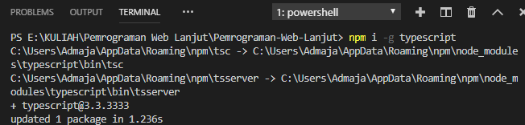
- Mengecek versi dari typescript
- Membuat direktori ts-hello
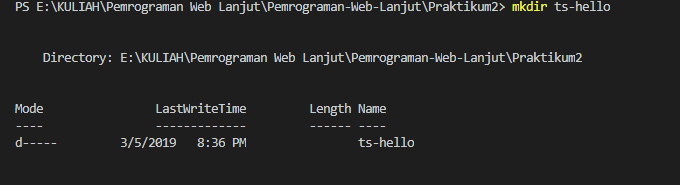
Membuat code typescript
- function log(message){
- console.log(message);
- }
- let message = 'Hello World';
- log(message);
melakukan proses transpile file typescript ke javascript
- mengecek apakah sudah ada main.js
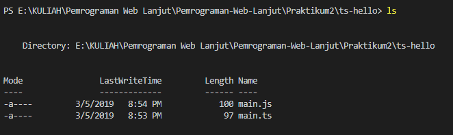
- melakukan execute pada file main.js
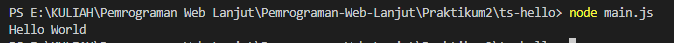
Praktikum – bagian 2: Declaring Variable
1. function doSomething(){
2. for(let i = 0; i \< 5; i++){
3. console.log(i);
4. }
5. console.log('Finally: ' +i);
6. }
7. doSomething();
- menghapus main.js
- mentranspile main.ts yang baru
- mengexecute main.js
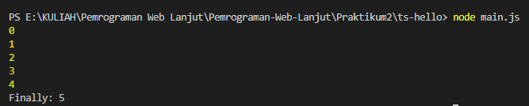
Praktikum – bagian 3 : types
1. let count = 5;
2. count = 'a';
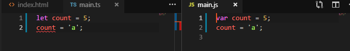
Praktikum – bagian 4: Type Assertion
1. let pesan;
2. pesan = 'abc';
3. let percobaan=(\<string\>pesan).endsWith('c');
4. let alternative = (pesan as string).endsWith('c');
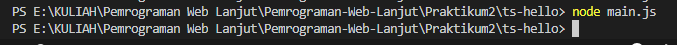
Praktikum – bagian 5 : Arrow Function
Main.tsc
1. let log = function pesan(){
2. console.log(pesan);
3. }
4. let doLog=(pesan)=\>{
5. console.log(pesan);
6. }
7. let doLog1=(pesan)=\>console.log(pesan);
main.js
var log = function pesan() {
console.log(pesan);
};
var doLog = function (pesan) {
console.log(pesan);
};
var doLog1 = function (pesan) { return console.log(pesan); };
Hasil execute
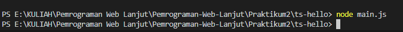
Praktikum Bagian 6: Interface
Main.ts
interface Point{
x:number;
y:number;
}
let drawPoint=(point:Point)=\>{
*//...*
}
drawPoint({
x:1,
y:3,
})
Main.js
var drawPoint = function (point) {
*//...*
};
drawPoint({
x: 1,
y: 3
});
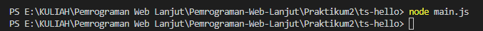
Praktikum bagian 7: Classes
Main.ts
Class Pointku{
x:number;
y:number;
draw(){
*//...*
}
getDistance(another:Pointku){
*//...*
}
}
Main.js
Class Pointku{
x: number;
y: number;
draw(){
*//...*
}
getDistance(another, Pointku){
*//...*
}
}
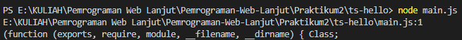
Praktikum bagian 8 : Objects
Main.ts
class Pointku{
a:number;
b:number;
draw(){
console.log('X' + *this*.a + ',Y' + *this*.b);
}
getDistance(another:Pointku1){
*//....*
}
}
let coins:Pointku1
coins.draw();
Main.js
var Pointku = /** @class */ (function () {
function Pointku() {
}
Pointku.prototype.draw = function () {
console.log('X' + this.a + ',Y' + this.b);
};
Pointku.prototype.getDistance = function (another) {
//....
};
return Pointku;
}());
var coins;
coins.draw();
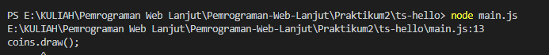